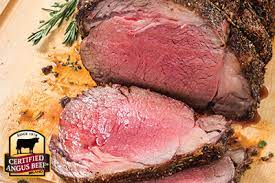

Ribeye Roast Recipe

Description
Do you like meat? Of course you do, here is a delectable meaty recipe for your carnivous cravings.
Ingredients
- 1 ribeye roast, about 5 pounds
- Salt and Pepper
- 4tbsp melted butter, for brushing
- 2 tablespoons minced garlic
- 2 tablespoon italian seasoning
Steps
- Preheat oven to 450 degrees.
- Cover ribeye roast with melted butter and Combine garlic, salt, and seasonings in a small bowl.
- Cover roast with herbs and seasonings. Place roast in roasting pan into your oven for 15 minutes
- After 15 minutes, reduce heat to 325ºF and continue roasting for approximately 2 hours. Use a thermometer or digital cooking probe to test the ribeye and continue to cook to the desired internal temperature (see below).
- For medium rare to medium ribeye roast, the in-oven temperature should be 120 to 125 degrees Fahrenheit. Transfer roast to cutting board or cooling rack and tent with foil and let rest 15-30 minutes.